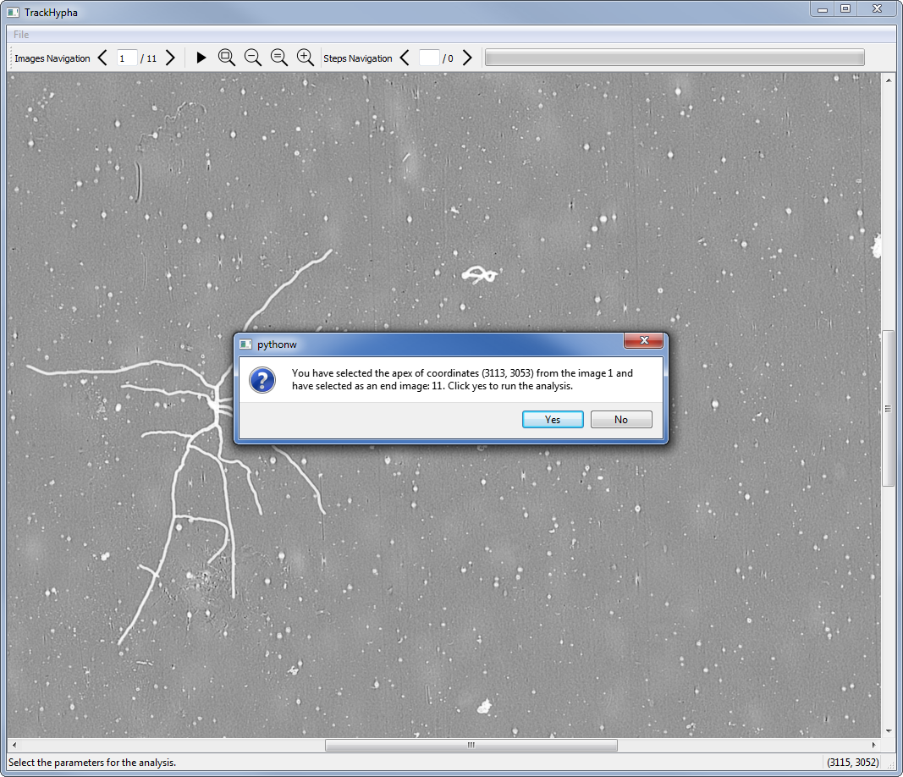

Documentation utilisateur¶
Installation¶
Quelle que soit la plateforme (Linux, Windows, Mac…), TrackHypha ne nécessite aucune installation. Le dossier icons fourni avec les exécutables doit se trouver dans le même dossier que ceux-ci, sinon les icones de l’application ne s’afficheront pas.
Le code source (lien à venir) est distribué sous licence GPL v3. Il nécessite les dépendances suivantes :
Utilisation¶
Il suffit de double-cliquer sur l’exécutable pour lancer l’application. Celle-ci est dotée d’une interface graphique facilitant la sélection d’un apex ainsi que la visualisation des étapes de croissance de l’hyphe depuis l’apex sélectionné.

Note
L’apparence de la fenêtre et des boutons peut légèrement varier d’un système d’exploitation à un autre mais cela ne change en rien l’utilisation de l’application.
Gestion d’un projet¶
La gestion d’un projet se fait via le menu File situé en haut à gauche de l’interface. Ce menu contient les options suivantes :
- New : crée un nouveau projet;
- Open : ouvre un projet existant;
- Save : sauvegarde le projet ouvert;
- Export : exporte le projet ouvert;
- Close : ferme l’application.
Création¶
Avant même la création d’un projet, il est nécessaire de créer l’environnement du projet. Il faut pour cela organiser les données à analyser de la manière suivante :
Note
Lors de la création d’un premier projet sur un jeu d’images donné, des dossiers save et export seront automatiquement ajoutés à la racine de l’environnement de projet s’ils n’existent pas déjà.
Avertissement
L’arborescence précédente doit être rigoureusement respectée pour que l’application fonctionne correctement. La casse du nom des dossiers a également son importance.
- Dossier skeletons
- Il contient les images squelettisées sur lesquelles repose l’analyse. Seul le format tif/tiff est pour le moment supporté.
- Dossier regMosaic
- Il contient les images qui seront affichées à l’écran lors du choix de l’apex. Après analyse, une copie de ces images seront également colorisées puis affichées à l’écran afin de permettre la visualisation du parcours de l’apex au cours du temps. Les images de ce dossier peuvent être les mêmes que celles du dossier skeletons. Pour une question de lisibilité et de confort de visualisation, il est cependant conseillé d’utiliser les panoramas en niveaux de gris, ou à défaut, les images binarisées ayant servies à la squelettisation. Les formats tif/tiff, jpg/jpeg et png peuvent être utilisés.
Avertissement
Afin d’éviter les erreurs d’analyse, les deux dossiers skeletons et regMosaic doivent contenir le même nombre d’images. Les images doivent être nommés chronologiquement et chaque image de skeletons doit avoir son pendant dans regMosaic. Tant que l’ordre chronologique est respecté, les noms des images peuvent différer d’un dossier à l’autre.
Une fois l’environnement de projet créé, il devient alors possible de créer un projet dans l’application via le menu File, option New ou par le raccourci Ctrl + N (Cmd + N sous Mac OS). L’explorateur de fichiers s’ouvre et il faut sélectionner le dossier de l’environnement de projet (i.e. celui contenant les dossiers skeletons et regMosaic). Après sélection et validation, les images contenues dans regMosaic se chargent puis la première image s’affiche. Le projet est créé.
Ouverture¶
L’ouverture d’un projet précédemment sauvegardé se fait via le menu File, option Open ou par le raccourci Ctrl + O (Cmd + O sous Mac OS). L’explorateur de fichiers s’ouvre et il faut se déplacer dans le dossier de l’environnement de projet. Toutes les sauvegardes effectuées sur le projet en question se trouvent dans le dossier save. Après sélection de la save voulue, le projet se charge puis s’affiche.
Note
Afin de limiter la taille du fichier de sauvegarde, les images colorisées permettant de suivre l’évolution de l’apex au cours du temps ne sont pas sauvegardées. Pour les afficher de nouveau, il est nécessaire de relancer une analyse.
Sauvegarde¶
La sauvegarde du projet présentement ouvert se fait via le menu File, option Save ou par le raccourci Ctrl + S (Cmd + S sous Mac OS). Après sélection, une sauvegarde est automatiquement créée dans le dossier save de l’environnement de projet.
Note
Les fichiers de sauvegarde sont nommés automatiquement suivant la syntaxe suivante : ProjectNumberaaaa-mm-dd-hh-mm-ss
Note
Afin de limiter la taille du fichier de sauvegarde, aucune image n’est sauvegardée. Les images nécessaires à l’analyse se trouvent toujours dans les dossiers skeletons et regMosaic et sont rechargées directement depuis ces dossiers lors de l’ouverture d’une sauvegarde. Quant aux images colorisées permettant de suivre l’évolution de l’apex au cours du temps, elles ne peuvent être ré-obtenues qu’en relançant une analyse.
Exportation¶
L’exportation du projet présentement ouvert se fait via le menu File, option Export ou par le raccourci Ctrl + E (Cmd + E sous Mac OS). Une fenêtre s’ouvre alors, proposant des options d’exportation à l’utilisateur.
La zone de saisie de texte située en haut de la fenêtre (en violet) permet de renseigner des commentaires sur l’analyse. Ces commentaires seront exportés dans le fichier texte.
Sous la zone de texte (en bleu), plusieurs éléments sont proposés à l’exportation.
- Export du fichier texte
Exporte au format txt les données suivantes :
- les paramètres de l’analyse : image de départ, image de fin, coordonnées de l’apex sélectionné;
- les commentaires saisis lors de l’étape précédente;
- la liste des hyphes explorées avec leur longueur et leur vitesse de croissance;
- la liste des segments composant chacune des hyphes.
Cette option est cochée par défaut.
Début du document texte exporté.
- Export de l’image finale
- Exporte au format tif la dernière image de l’analyse, les hyphes explorées étant colorisées en rouge. Cette option est cochée par défaut.
- Export des images d’étape
- Exporte en stack tif les images d’étape de l’analyse, l’apex suivi étant colorisé en rouge sur chacune des images. Cette option n’est pas cochée par défaut car la création du stack peut prendre du temps.
Après sélection des options d’exportation puis validation, le projet est exporté dans le dossier export de l’environnement de projet.
Note
Les fichiers d’export sont nommés automatiquement suivant la syntaxe suivante :
- ProjectNumberaaaa-mm-dd-hh-mm-ss : document texte
- ImageFinalaaaa-mm-dd-hh-mm-ss : image finale
- ImageStepsaaaa-mm-dd-hh-mm-ss : stack des images d’étape
Lancement d’une analyse¶
Une fois un projet ouvert ou créé, il est possible de lancer une analyse sur tout ou partie des images du projet. Appuyer sur le bouton Run permet de lancer le paramétrage de l’analyse. Après confirmation du lancement du paramétrage, l’utilisateur peut naviguer dans les images et sélectionner l’apex qu’il souhaite suivre en cliquant directement sur celui-ci. S’il clique en dehors d’un apex, il en est informé et doit recommencer sa sélection.
Une fois l’apex choisi, l’utilisateur doit sélectionner l’image de fin de l’analyse. Après validation, un récapitulatif des paramètres de l’analyse s’affiche.
L’utilisateur peut alors choisir d’annuler son paramétrage ou de lancer l’analyse. À tout moment, fermer les fenêtres affichées entraîne l’annulation du paramétrage.
Note
L’image de départ de l’analyse sera nécessairement celle où l’apex a été sélectionné.
Lorsque l’analyse est lancée, une barre de chargement indique sa progression. Une fois l’analyse terminée, l’image représentant les hyphes explorées lors de celle-ci s’affiche.
Après analyse, il est possible de naviguer à la fois dans les images d’entrée et dans les images d’étape de l’analyse à l’aide des flèches dédiées.
Note
L’image d’étape 0 correspond aux hyphes parcourures lors de l’analyse.
Pour relancer une analyse sur le même jeu d’images, il suffit de cliquer de nouveau sur le bouton Run pour lancer un paramétrage.